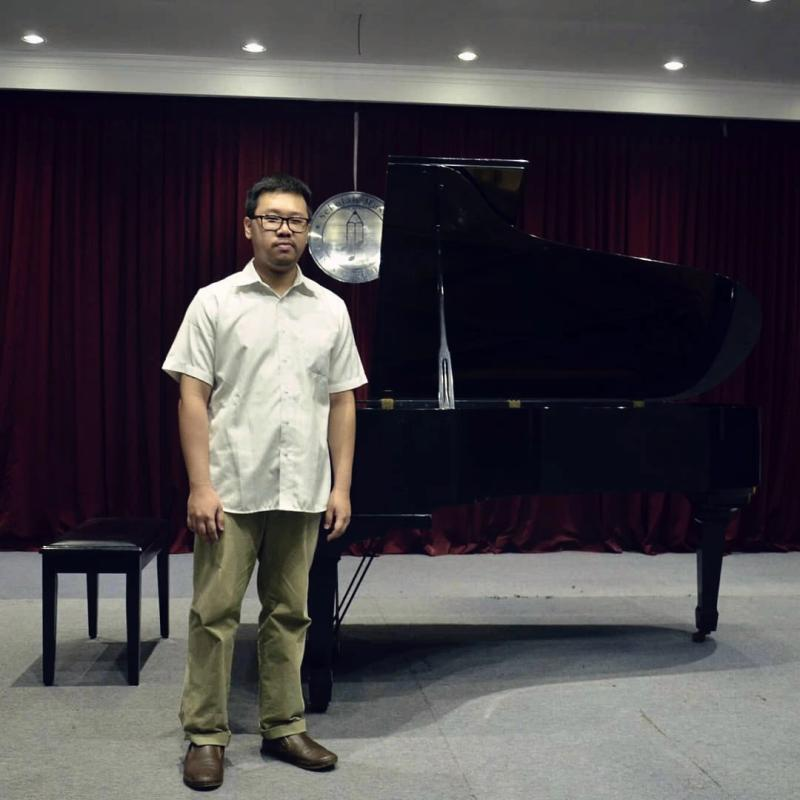

Pianis, pengajar, dan komponis
FelixSatia
Belajar musik bersama pengajar peraih Best Teacher Award dan Gold Award. Kelas pertama gratis, tanpa komitmen.
%20(2).jpg)
Belajar musik bersama pengajar peraih Best Teacher Award dan Gold Award. Kelas pertama gratis, tanpa komitmen.

Felix Satia adalah pianis, pengajar, dan komponis dari Jakarta. Ia mengajar di sekolah musik, pernah mengiringi paduan suara, dan menciptakan lagu yang memenangkan lomba tingkat keuskupan hingga provinsi.
Penghargaan Best Teacher dari National Cantata Excellence Award diberikan atas capaian ujian murid-muridnya. Di kelasnya, murid belajar dengan target yang jelas dan suasana yang menyenangkan.
Setiap murid punya suara sendiri. Tugas saya membantunya menemukan.
Semua kelas dimulai dengan sesi percobaan gratis, agar kamu bisa mengenal cara mengajar dan menentukan level yang cocok.
Dari pemula hingga persiapan ujian dan resital. Klasik, populer, dan iringan lagu.
Membaca not, harmoni, dan analisis dengan metode runtut sesuai kebutuhan ujian.
Teknik bernyanyi, membaca partitur, dan kerja sama ansambel untuk anak dan dewasa.
Menulis lagu, menata suara SSA dan SATB, dan menyiapkan karya untuk lomba.
Klik baris mana pun untuk melihat sertifikat aslinya.
Bukti dari latihan yang terarah: dari ujian internasional hingga festival piano nasional.
Karya ini menuntut kontrol sentuhan yang halus dan arpeggio yang mengalir. Tonton satu penampilan lengkap, dan dengarkan sendiri standar yang kamu pelajari di kelas.
Buka di YouTubeResital, festival, konser paduan suara, dan kelas bersama murid dari berbagai usia. Setiap bingkai menyimpan satu bab perjalanan.
Di balik piano dan ruang kelas, setiap nada dilatih dengan sabar, dan setiap murid didengarkan.
Mengajar adalah seni: menemukan nada terbaik dalam diri setiap murid.
Hanya hitam dan putih, tetapi dari dua warna itulah lahir seluruh nuansa musik.
88 tuts, dua warna, satu bahasa
Kirim pesan singkat, pilih waktu yang nyaman, dan rasakan sendiri cara belajar yang terarah.